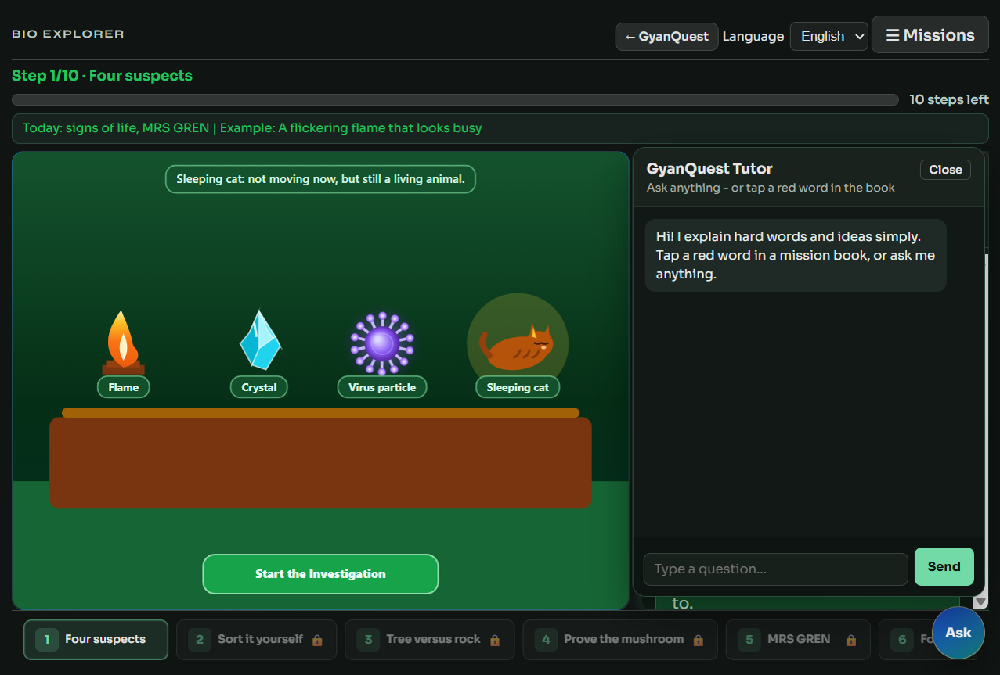

GyanQuest
Feature sheet 03 / 04
AI Tutor
Ask anything - GyanQuest Tutor
A floating tutor sits on every game. Students type a question or tap a red glossary word in a mission book.
Answers come from Groq via the local /api/chat proxy so the API key never ships to the browser.

What it is
Subject-aware explain chat: short, simple answers for hard words and ideas. Works during play and while reading books.
- Blue Ask FAB (bottom-right)
- Chat panel: messages + input + Send
- Book terms auto-open the tutor
- History kept for the session
How a student uses it
- Tap Ask anytime in a game
- Type a question in plain language
- Or open a book and tap a red word
- Read the tutor reply in the panel
- Close chat and keep playing
What you see on screen
- Header: GyanQuest Tutor
- Subtitle: Ask anything - or tap a red word
- Welcome: explains how to use it
- Input: Type a question…
- Send: posts to the chat API
Backend + safety
- Proxy:
tools/groq_proxy.py - Key only in root
.env - Default model with fallback chain
- Games still work offline without chat
- Engine:
engine/js/book-chat.js
Example in the snapshot
During Living or Not Step 1, the tutor panel sits beside the Canvas suspects. A student can ask “Is a virus alive?” without leaving the mission. Same Ask button appears in Chemistry Lab, Force Fighter, Specimen Lab entry paths, and every other game shell.